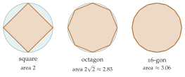

You may assume that all infinite sums and products in this question converge.
Prove by induction that for all positive integers \(n\), \[\sinh x = 2^n \cosh\left(\frac{x}{2}\right) \cosh\left(\frac{x}{4}\right) \cdots \cosh\left(\frac{x}{2^n}\right) \sinh\left(\frac{x}{2^n}\right)\] and deduce that, for \(x \neq 0\), \[\frac{\sinh x}{x} \cdot \frac{\;\dfrac{x}{2^n}\;}{\sinh\left(\dfrac{x}{2^n}\right)} = \cosh\left(\frac{x}{2}\right) \cosh\left(\frac{x}{4}\right) \cdots \cosh\left(\frac{x}{2^n}\right).\]
You are given that the Maclaurin series for \(\sinh x\) is \[\sinh x = \sum_{r=0}^{\infty} \frac{x^{2r+1}}{(2r+1)!}.\] Use this result to show that, as \(y\) tends to \(0\), \(\dfrac{y}{\sinh y}\) tends to \(1\).
Deduce that, for \(x \neq 0\), \[\frac{\sinh x}{x} = \cosh\left(\frac{x}{2}\right) \cosh\left(\frac{x}{4}\right) \cdots \cosh\left(\frac{x}{2^n}\right) \cdots.\]
Let \(x = \ln 2\). Evaluate \(\cosh\left(\dfrac{x}{2}\right)\) and show that \[\cosh\left(\frac{x}{4}\right) = \frac{1 + 2^{\frac12}}{2 \times 2^{\frac14}}.\] Use part (ii) to show that \[\frac{1}{\ln 2} = \frac{1 + 2^{\frac12}}{2} \times \frac{1 + 2^{\frac14}}{2} \times \frac{1 + 2^{\frac18}}{2} \cdots.\]
Show that \[\frac{2}{\pi} = \frac{\sqrt2}{2} \times \frac{\sqrt{2 + \sqrt2}}{2} \times \frac{\sqrt{2 + \sqrt{2 + \sqrt2}}}{2} \cdots.\]
The hook
The last line of this question is one of the most beautiful formulas in mathematics, and one of the oldest of its kind. It was published in 1593 by the French lawyer and mathematician François Viète, and it was the first time anyone had written \(\pi\) exactly as the result of an infinite process. Before Viète, \(\pi\) could only be approximated; after him, it could be defined by a formula that, carried on for ever, gives every digit.
The formula looks mysterious: where could nested square roots of \(2\) come from? The question reveals that it comes from repeatedly using the double-angle formula, and it gets a second, less famous formula, for \(\ln 2\), from the same machinery along the way.
Before you start
What is the double-angle formula for \(\sinh\)? (If you are not sure, write \(\sinh 2y\) and \(\sinh y \cosh y\) in terms of exponentials and compare.)
\(\sinh 2y = 2\sinh y\cosh y\), exactly like \(\sin 2y = 2\sin y\cos y\). That one identity, used over and over, drives the whole question. The question works with hyperbolic functions until the last part, where we will switch to ordinary trigonometry.
Working it through
Stage 1 Halving repeatedly
The case \(n = 1\) is just the double-angle formula with \(y = x/2\): \[\sinh x = 2\cosh\left(\frac{x}{2}\right)\sinh\left(\frac{x}{2}\right).\]
Suppose the formula holds for \(n\). The last factor is \(\sinh(x/2^n)\). How can you rewrite it to get the formula for \(n + 1\)?
Apply the double-angle formula to it: \(\sinh(x/2^n) = 2\cosh(x/2^{n+1})\sinh(x/2^{n+1})\). Substituting, \[\sinh x = 2^{n+1}\cosh\left(\frac{x}{2}\right)\cdots\cosh\left(\frac{x}{2^n}\right)\cosh\left(\frac{x}{2^{n+1}}\right)\sinh\left(\frac{x}{2^{n+1}}\right),\] which is the formula for \(n + 1\). By induction it holds for all \(n\).■
For the deduction, divide both sides by \(x\), and then multiply both sides by \(\dfrac{x/2^n}{\sinh(x/2^n)}\). On the right, \(2^n \sinh(x/2^n) \cdot \dfrac{x/2^n}{x\,\sinh(x/2^n)} = 1\), leaving just the product of cosh terms.■
Stage 2 The limit
From the series, for \(y \neq 0\), \[\frac{\sinh y}{y} = 1 + \frac{y^2}{3!} + \frac{y^4}{5!} + \cdots,\] which tends to \(1\) as \(y \to 0\), so its reciprocal \(y/\sinh y\) also tends to \(1\). (If you want more care: every factorial in the tail \(\frac{y^2}{3!} + \frac{y^4}{5!} + \cdots\) is at least \(6\), so for \(0 < |y| < 1\) the tail is at most \(\frac{1}{6}\bigl(y^2 + y^4 + \cdots\bigr) = \frac{y^2}{6(1-y^2)}\), which tends to \(0\).)
Now let \(n \to \infty\) in part (i), with \(x\) fixed. Then \(y = x/2^n \to 0\), so the left-hand side tends to \(\dfrac{\sinh x}{x} \times 1\). The right-hand side is the partial product, which therefore tends to \(\dfrac{\sinh x}{x}\). That is what the infinite product means.■
Stage 3 A formula for \(\ln 2\)
With \(x = \ln 2\), \(e^{x/2} = \sqrt2\), so \[\cosh\left(\frac{x}{2}\right) = \frac{2^{1/2} + 2^{-1/2}}{2} = \frac{2 + 1}{2\sqrt2} = \frac{3}{2\sqrt2}.\] Similarly \(e^{x/4} = 2^{1/4}\), so \(\cosh(x/4) = \dfrac{2^{1/4} + 2^{-1/4}}{2}\), and multiplying top and bottom by \(2^{1/4}\) gives \(\dfrac{2^{1/2} + 1}{2 \times 2^{1/4}}\).■
What is the general pattern for \(\cosh(x/2^k)\)? What happens when you multiply all the denominators \(2 \times 2^{1/2^k}\) together?
The same calculation gives, for every \(k \geq 1\), \[\cosh\left(\frac{x}{2^k}\right) = \frac{1 + 2^{1/2^{k-1}}}{2} \times 2^{-1/2^k}.\] (For \(k = 1\) this is \(\frac{1 + 2}{2} \times 2^{-1/2} = \frac{3}{2\sqrt2}\), as before.) Multiplying over \(k = 1, 2, 3, \ldots\), the powers of \(2\) combine to \(2^{-(1/2 + 1/4 + 1/8 + \cdots)} = 2^{-1}\), and the first fraction is \(\frac{1+2}{2} = \frac32\). So the infinite product is \[\frac32 \times \frac12 \times \frac{1 + 2^{1/2}}{2} \times \frac{1 + 2^{1/4}}{2} \times \frac{1 + 2^{1/8}}{2} \cdots.\] On the other side, \(\sinh(\ln 2) = \frac{2 - \frac12}{2} = \frac34\), so \(\dfrac{\sinh x}{x} = \dfrac{3}{4\ln 2}\). The factor \(\frac34\) cancels from both sides, leaving \[\frac{1}{\ln 2} = \frac{1 + 2^{1/2}}{2} \times \frac{1 + 2^{1/4}}{2} \times \frac{1 + 2^{1/8}}{2} \cdots. \qed\]
Stage 4 Viète’s formula
Part (iv) has \(\pi\) in it, so it must come from ordinary trigonometry, not hyperbolic functions. Does everything in parts (i) and (ii) still work with \(\sin\) and \(\cos\) in place of \(\sinh\) and \(\cosh\)?
It does. The induction used only the double-angle formula, and \(\sin 2y = 2\sin y\cos y\). The limit used only \(\frac{\sin y}{y} \to 1\) as \(y \to 0\), which follows from \(\sin y = y - \frac{y^3}{3!} + \cdots\) in the same way. So for \(x \neq 0\) (and \(x\) not a multiple of \(\pi\), so that no factor is zero along the way), \[\frac{\sin x}{x} = \cos\left(\frac{x}{2}\right)\cos\left(\frac{x}{4}\right)\cos\left(\frac{x}{8}\right)\cdots.\]
Choose \(x\) so that the left-hand side is \(2/\pi\), and work out the first few factors. The half-angle formula \(\cos\frac{\theta}{2} = \sqrt{\frac{1 + \cos\theta}{2}}\) (for \(0 \leq \theta \leq \pi\)) will be useful.
Take \(x = \frac{\pi}{2}\). Then \(\frac{\sin x}{x} = \frac{1}{\pi/2} = \frac{2}{\pi}\), and the factors are \(\cos\frac\pi4, \cos\frac\pi8, \cos\frac{\pi}{16}, \ldots\). The first is \(\cos\frac\pi4 = \frac{\sqrt2}{2}\). If a factor is \(\cos\theta = \frac{c}{2}\), the half-angle formula makes the next one \[\cos\frac{\theta}{2} = \sqrt{\frac{1 + c/2}{2}} = \frac{\sqrt{2 + c}}{2}.\] So the numerators go \(\sqrt2\), \(\sqrt{2 + \sqrt2}\), \(\sqrt{2 + \sqrt{2 + \sqrt2}}\), …, each obtained by adding \(2\) to the previous one and taking the square root. That is Viète’s formula.■
Looking back
Telescoping a product. The identity in part (i) is a product that collapses, just as some sums telescope.
Finite identity first, limit second. As in Section 2.4, every step was exact for finite \(n\), and the only limit needed was the very simple \(\frac{\sin y}{y} \to 1\).
Hyperbolic and circular functions are twins. The same proof worked for both, because both satisfy the same double-angle formula and the same small-angle limit. This is no coincidence: \(\cosh(\mathrm{i}x) = \cos x\), as you will see in Section 5.7.
What’s really going on
Viète’s formula has a geometric meaning that goes back to Archimedes. A regular polygon with \(2^n\) sides inscribed in a circle of radius \(1\) has area \(A_n = 2^{n-1}\sin\frac{2\pi}{2^n}\). Doubling the number of sides multiplies the area by \[\frac{A_{n+1}}{A_n} = \frac{2^n \sin(\pi/2^n)}{2^{n-1}\cdot 2\sin(\pi/2^n)\cos(\pi/2^n)} = \frac{1}{\cos(\pi/2^n)}.\] Starting from the square (\(A_2 = 2\)) and doubling for ever, the area tends to the area of the circle, \(\pi\). So \(\pi = 2 \div \bigl(\cos\frac\pi4 \cos\frac\pi8 \cos\frac{\pi}{16}\cdots\bigr)\), which is Viète’s formula. Each factor in the product is the ratio of the areas of two successive polygons in Figure 2.5.1.

Infinite products
Viète’s product was the first infinite product in mathematics. Others followed: John Wallis found \(\frac{\pi}{2} = \frac{2}{1}\cdot\frac{2}{3}\cdot\frac{4}{3}\cdot\frac{4}{5}\cdot\frac{6}{5}\cdot\frac{6}{7}\cdots\) in 1655, and Euler’s product for \(\frac{\sin x}{x}\) appeared in Section 2.4. At university you will learn when an infinite product converges. Roughly, \(\prod(1 + a_n)\) with small positive \(a_n\) behaves like \(\sum a_n\), because \(\ln(1 + a_n) \approx a_n\). Here \(1 - \cos(\pi/2^n) \approx \frac12(\pi/2^n)^2\), which shrinks by a factor of \(4\) each time, so the product converges quickly.
How quickly?
After \(n\) factors the partial product equals \(\dfrac{1}{2^n\sin(\pi/2^{n+1})}\) exactly, and its error is about \(\frac{\pi^2}{6 \cdot 4^{n+1}}\) times \(\frac2\pi\). Each new factor makes the answer about \(4\) times more accurate, gaining about \(0.6\) of a decimal digit. Ten factors give \(2/\pi\) correct to six decimal places. That is good, but nothing like as fast as the methods of Section 2.6, which double the number of correct digits at each step.
The thinking skill
An identity that relates \(f(x)\) to \(f(x/2)\) can be applied again and again; the result, after a limit, is often an infinite sum or product.
Look for the “remainder” term after \(n\) steps (here \(2^n\sinh(x/2^n)\)) and find its limit separately. This pattern appears all over analysis, from infinite products to the construction of fractals.
Try this next
The 1990 version. (From STEP I, 1990.) Show directly, using only the double-angle formula for \(\sin\), that \[\cos\left(\frac{\alpha}{2}\right)\cos\left(\frac{\alpha}{4}\right)\cdots\cos\left(\frac{\alpha}{2^n}\right) = \frac{\sin\alpha}{2^n\sin(\alpha/2^n)},\] and deduce Viète’s formula in the form \(\dfrac\pi2 = \dfrac{1}{\sqrt{\frac12}\,\sqrt{\frac12 + \frac12\sqrt{\frac12}}\cdots}\).
Another angle. Use \(x = \frac{\pi}{3}\) in the product for \(\frac{\sin x}{x}\) to write \(\frac{3\sqrt3}{2\pi}\) as an infinite product, and simplify the first two factors.
How many factors? Use a calculator to find how many factors of Viète’s product are needed to give \(\pi\) correct to \(4\) decimal places. Explain why each extra factor gains about \(0.6\) of a digit.
A formula for \(\ln 3\). Repeat part (iii) with \(x = \ln 3\) to write \(\frac{1}{\ln 3}\) as an infinite product. How many factors are needed to give \(\frac{1}{\ln 3}\) to two decimal places? Why does this product converge more slowly than Viète’s?
Further reading
Petr Beckmann, A History of \(\pi\) (St Martin’s Press). Archimedes, Viète, Wallis and the rest, told with gusto.
Jonathan Borwein & Peter Borwein, Pi and the AGM (Wiley). The serious mathematics of computing \(\pi\), including the method of Section 2.6. Chapter 1 is accessible with this chapter behind you.
Eli Maor, Trigonometric Delights (Princeton University Press). Contains a chapter on Viète and his product.